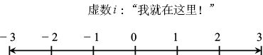
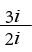
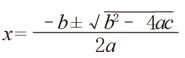
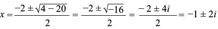

没有办法化简一样）。a + bi这种形式的数字（其中a、b是实数）叫作“复数”（complex numbers）。注意，实数与虚数可被视为复数的特例（分别是b = 0和a = 0时的情况）。也就是说，实数π和虚数7i都是复数。
没有办法化简一样）。a + bi这种形式的数字（其中a、b是实数）叫作“复数”（complex numbers）。注意，实数与虚数可被视为复数的特例（分别是b = 0和a = 0时的情况）。也就是说，实数π和虚数7i都是复数。虚数i非常神秘，原因在于：
i2 = – 1
第一次听说这个数字的神奇属性时，人们往往认为这是不可能的。一个数字自乘之后，积竟然为负数，这怎么可能呢？所有人都知道，02 = 0，负数与自身的乘积必然是正数。但是，不要急于否定，想一想，你是不是也曾认为负数是不可能存在的（在几百年的时间里，数学界几乎都是这样认为的）？比0还小是什么意思？比没有还少，这怎么可能呢？最后，你把数字看成实数线（real line）上的“住户”，如下图所示，正数居住在0的右边，负数居住在0的左边。在理解i的含义时，我们也要跳出思维的“盒子”（或者说摆脱实数线的束缚）。只有这样，我们才会发现i具有实实在在的意义。

我们把i称为虚数。如果一个数字的平方是负数，我们就说这个数字是虚数。例如，虚数2i 满足 (2i) (2i) = 4i2 = – 4。对于虚数而言，代数运算的规则不变。例如：
3i + 2i = 5i，3i – 2i = 1i = i，2i – 3i = –1i = –i，
再例如：
3i×2i = 6i2 = – 6，

= 3/2顺便告诉大家，我们要注意一个问题：–i的平方也是–1，因为 (–i) (–i) = i2 = –1。实数与虚数相乘，会得到我们预期的结果，例如，3×2i = 6i。
实数与虚数相加时，会有什么结果呢？例如，3加4i的和是多少？答案就是：3 + 4i。这个答案没有办法进一步化简（就像1 +没有办法化简一样）。a + bi这种形式的数字（其中a、b是实数）叫作“复数”（complex numbers）。注意，实数与虚数可被视为复数的特例（分别是b = 0和a = 0时的情况）。也就是说，实数π和虚数7i都是复数。
接下来，我们举几个运算过程比较复杂（但不是特别复杂）的例子。先来看加减运算：
(3 + 4i) + (2 + 5i) = 5 + 9i
(3 + 4i) – (2 + 5i) = 1 – i
进行乘法运算时，我们可以应用本书第2章介绍的FOIL法则：
(3 + 4i) (2 + 5i) = 6 + 15i + 8i + 20i2
= (6 – 20) + (15 + 8)i
= –14 + 23i
有了复数之后，所有的二次多项式 ax2 + bx + c 都有两个根（或者一个重根）。根据二次方程求根公式，在

时，二次多项式等于0。我们在第2章说过，如果二次根号下的数字为负数，那么二次多项式没有实根。但是现在，负数的平方根已经不再是一个问题了。例如，方程式 x2 + 2x + 5的根为：

顺便说一句，当a、b或c为复数时，二次方程求根公式仍然成立。
二次多项式至少有一个根，尽管有时候它的根是复根。下面这条定理指出，几乎所有多项式都具有这个特点。
定理（代数基本定理）：任何一次或多次多项式 p (x) 在 p (z) = 0时都有根z。
注意，一次多项式3x – 6可以分解成3 (x – 2）的形式，其中2是3x – 6的唯一根。一般地，如果 a ≠ 0，多项式 ax – b 就可以分解成 a [ x – ( b / a)] 的形式，其中 b / a 是ax – b 的根。
同样，所有的二次多项式ax2 + bx + c 都可以分解成 a (x – z1 ) (x – z2) 的形式，其中 z1和z2是二次多项式的根（可能是复根，也可能是重根）。代数基本定理描述的这个规律适用于任意次的多项式。
推论：所有n H 1的多项式都可以分解成 n 个部分。具体来说，如果 p(x) 是 n 次多项式，且a ≠ 0，那么必然存在 n 个数 z1，z2，… ，zn，满足 p(x) = a (x – z1) (x – z2) …(x – zn)。数字zi是 p(zi) = 0时多项式的根。
这条推论的意思是，所有n H 1的多项式都至少有一个、至多有n个不同的根。例如，多项式 x4 – 16是四次多项式，可以分解成：
x4 – 16 = (x2 –4) (x2 + 4) = (x – 2) (x + 2) (x – 2i) (x + 2i)
它有4个不同的根，即2、–2、2i和–2i。多项式3x3 + 9x2 –12的次数是3，但它的因式分解的结果为：
3x3 + 9x2 – 12 = 3 (x2 + 4x + 4) (x – 1) = 3 (x + 2)2 (x – 1)
因此，它只有两个不同的根，即 –2和1。